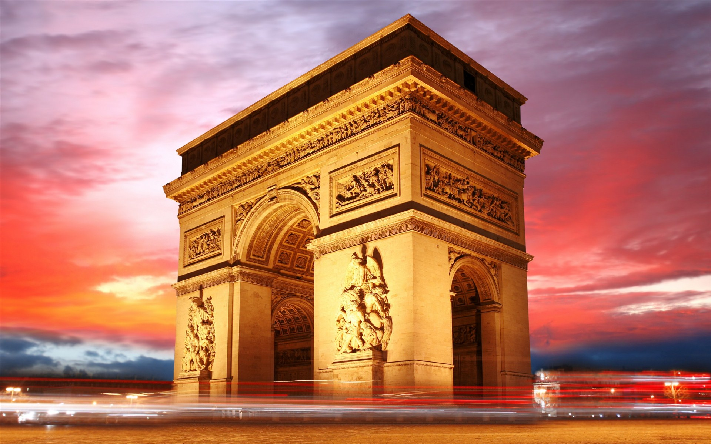
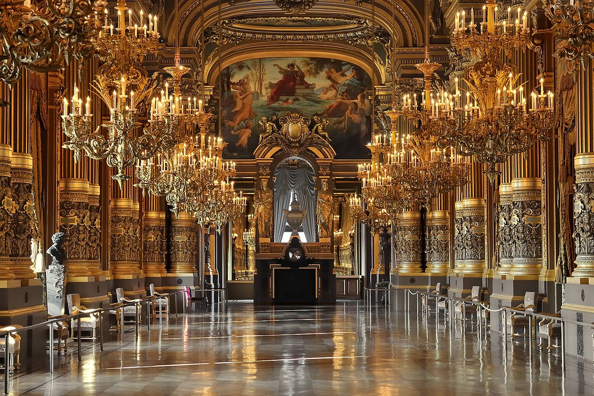
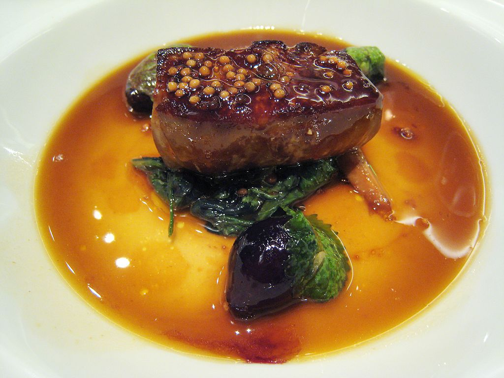

France
During the Middle Ages, many fortified castles were built by feudal nobles to mark their powers. Some French castles that survived are Chinon, Château d'Angers, the massive Château de Vincennes and the so-called Cathar castles. During this era, France had been using Romanesque architecture like most of Western Europe. Some of the greatest examples of Romanesque churches in France are the Saint Sernin Basilica in Toulouse, the largest romanesque church in Europe, and the remains of the Cluniac Abbey.
The Gothic architecture, originally named Opus Francigenum meaning "French work", was born in Île-de-France and was the first French style of architecture to be copied in all Europe.[305] Northern France is the home of some of the most important Gothic cathedrals and basilicas, the first of these being the Saint Denis Basilica (used as the royal necropolis); other important French Gothic cathedrals are Notre-Dame de Chartres and Notre-Dame d'Amiens. The kings were crowned in another important Gothic church: Notre-Dame de Reims.[306] Aside from churches, Gothic Architecture had been used for many religious palaces, the most important one being the Palais des Papes in Avignon.
The final victory in the Hundred Years' War marked an important stage in the evolution of French architecture. It was the time of the French Renaissance and several artists from Italy were invited to the French court; many residential palaces were built in the Loire Valley. Such residential castles were the Château de Chambord, the Château de Chenonceau, or the Château d'Amboise.
French cuisine is renowned for being one of the finest in the world. According to the regions, traditional recipes are different, the North of the country prefers to use butter as the preferred fat for cooking, whereas olive oil is more commonly used in the South. Moreover, each region of France has iconic traditional specialities: Cassoulet in the Southwest, Choucroute in Alsace, Quiche in the Lorraine region, Beef bourguignon in the Bourgogne, provençal Tapenade, etc. France's most renowned products are wines,[383] including Champagne, Bordeaux, Bourgogne, and Beaujolais as well as a large variety of different cheeses, such as Camembert, Roquefort and Brie. There are more than 400 different varieties.
A meal often consists of three courses, hors d'œuvre or entrée (introductory course, sometimes soup), plat principal (main course), fromage (cheese course) and/or dessert, sometimes with a salad offered before the cheese or dessert. Hors d'œuvres include terrine de saumon au basilic, lobster bisque, foie gras, French onion soup or a croque monsieur. The plat principal could include a pot au feu or steak frites. The dessert could be mille-feuille pastry, a macaron, an éclair, crème brûlée, mousse au chocolat, crêpes, or Café liégeois.
French cuisine is also regarded as a key element of the quality of life and the attractiveness of France. A French publication, the Michelin guide, awards Michelin stars for excellence to a select few establishments. The acquisition or loss of a star can have dramatic effects on the success of a restaurant. By 2006, the Michelin Guide had awarded 620 stars to French restaurants, at that time more than any other country, although the guide also inspects more restaurants in France than in any other country (by 2010, Japan was awarded as many Michelin stars as France, despite having half the number of Michelin inspectors working there).
